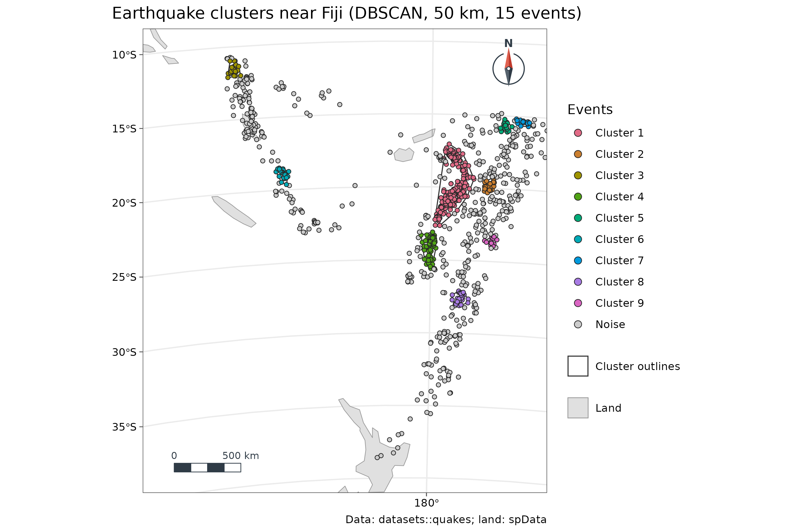

7. Point clusters and landscape fragmentation
guide-07-patterns-landscapes.Rmd
library(tidymapr)
library(dplyr)
world <- sf::st_read(system.file("shapes/world.gpkg", package = "spData"), quiet = TRUE)Part A. Clusters of points: DBSCAN
The concept
Many data sets are events at locations: earthquakes, disease cases, crimes, animal sightings, fires. A common question is whether they form groups, and where. Chapter 3’s statistics test values at fixed sites; here the locations are the data.
DBSCAN (density-based spatial clustering of applications with noise; Ester et al. 1996) finds groups as regions where points are dense, separated by sparse regions. Unlike k-means it does not need the number of clusters in advance, finds clusters of any shape, and labels isolated points as noise instead of forcing them into a group.
| Term | Definition |
|---|---|
eps (ε) |
The neighbourhood radius. tidymapr measures it in metres on the ground, also for longitude/latitude data |
min_pts |
Minimum number of points within ε for a point to be a core point |
| Core point | Has at least min_pts points (itself included) within
ε |
| Border point | Within ε of a core point but not a core point itself |
| Noise (cluster 0) | Neither: an isolated event |
| Cluster | Core points linked through chains of neighbours, plus their border points |
Earthquakes near Fiji
1000 earthquakes of magnitude 4 or more near Fiji since 1964 (Harvard PRIM-H project), in R’s datasets package.
cl <- geo_dbscan(datasets::quakes, eps = 50000, min_pts = 15, lon = long, lat = lat)
cl$group <- factor(ifelse(cl$cluster == 0, "Noise", paste("Cluster", cl$cluster)),
levels = c(paste("Cluster", sort(unique(cl$cluster[cl$cluster > 0]))), "Noise"))
summary_tbl <- sf::st_drop_geometry(cl) |>
summarise(events = n(), core = sum(core), mean_depth_km = round(mean(depth)),
mean_magnitude = round(mean(mag), 2), .by = group) |>
arrange(group)
knitr::kable(summary_tbl, caption = "Clusters found by DBSCAN (eps = 50 km, min_pts = 15).")| group | events | core | mean_depth_km | mean_magnitude |
|---|---|---|---|---|
| Cluster 1 | 259 | 223 | 554 | 4.49 |
| Cluster 2 | 23 | 10 | 225 | 4.47 |
| Cluster 3 | 25 | 15 | 102 | 4.70 |
| Cluster 4 | 76 | 57 | 518 | 4.56 |
| Cluster 5 | 19 | 7 | 217 | 4.44 |
| Cluster 6 | 26 | 15 | 217 | 4.57 |
| Cluster 7 | 17 | 3 | 98 | 4.68 |
| Cluster 8 | 27 | 11 | 88 | 4.64 |
| Cluster 9 | 15 | 1 | 63 | 4.90 |
| Noise | 513 | 0 | 207 | 4.69 |
land <- suppressWarnings(sf::st_crop(sf::st_shift_longitude(world), c(xmin = 160, ymin = -40, xmax = 190, ymax = -8)))
geo_map(
title = "Earthquake clusters near Fiji (DBSCAN, 50 km, 15 events)",
caption = "Data: datasets::quakes; land: spData",
crs = "+proj=laea +lat_0=-22 +lon_0=178 +datum=WGS84 +units=m"
) |>
map_polygons(land, fill = "grey88", border = "grey60", label = "Land") |>
map_polygons(attr(cl, "hulls"), fill = NA, border = "grey20", label = "Cluster outlines", linewidth = 0.4) |>
map_points(cl, fill = group, group = "Events", size = 1.4,
palette = c(grDevices::hcl.colors(nlevels(cl$group) - 1, "Dark 3"), "grey80"))
Interpretation. 487 of 1000 events (49 %) fall in 9 dense clusters; the rest are noise. The table adds meaning: the largest cluster (259 events) is deep, averaging 554 km below the surface, while the smaller clusters lie between 63 and 518 km. These are earthquakes within the Pacific plate as it sinks beneath the Tonga-Fiji region; DBSCAN separates its deep and shallower seismic zones using location alone.
Choosing eps and min_pts
| Setting | Too small | Too large |
|---|---|---|
eps |
Most points become noise; real clusters break apart | Separate clusters merge into one |
min_pts |
Chance groupings become clusters | Only the densest cores survive |
Choose eps from the process (the reach of an
interaction, the correlogram range of Chapter 3), or plot each point’s
distance to its min_pts-th nearest neighbour sorted from
smallest to largest, and take the distance at the “knee” where the curve
bends up. A common start is min_pts = 2 × the number of
dimensions, and larger for noisy data. Always report both
settings, and check that the main conclusions hold for nearby
values.
Part B. Landscape fragmentation
The concept
Habitat loss is often accompanied by fragmentation: the remaining habitat is broken into smaller, more isolated pieces with more edge. Landscape metrics quantify this from a categorical raster (land cover, habitat / non-habitat). tidymapr computes the standard FRAGSTATS metrics (McGarigal and Marks 1995), building patches with the 8-neighbour rule. Its results equal landscapemetrics’ on projected rasters; unlike it, tidymapr measures longitude/latitude rasters in true hectares and metres.
A two-class landscape
We use the vegetation classes from Chapter 6: Sentinel-2 NDVI above and below the Otsu threshold, over Luxembourg.
s2 <- terra::rast(system.file("ex/sent2_L2A_2024-08-24.tif", package = "terra"))
ndvi <- geo_spectral_index(s2, "NDVI", threshold = "otsu")
cover <- terra::ifel(ndvi[["above"]], 2, 1)
names(cover) <- "class" # 1 = low vegetation, 2 = high vegetation
cls <- geo_landscape(cover, level = "class") |>
mutate(class = c("1" = "Low vegetation", "2" = "High vegetation")[as.character(class)])
knitr::kable(cls, digits = 1, caption = "Class-level landscape metrics.")| class | np | ca | pland | lpi | area_mn | ed | ai | mesh |
|---|---|---|---|---|---|---|---|---|
| Low vegetation | 161 | 39518.4 | 14.6 | 2.0 | 245.5 | 4.4 | 43.3 | 241.7 |
| High vegetation | 8 | 231760.8 | 85.4 | 85.1 | 28970.1 | 4.4 | 89.4 | 196569.6 |
| Metric | Name | Units | Meaning | Fragmented habitat has |
|---|---|---|---|---|
np |
Number of patches | count | Separate pieces of the class | More patches |
ca |
Class area | ha | Total area of the class | — |
pland |
Percentage of landscape | % | Share of the map | — |
lpi |
Largest patch index | % | The largest patch as a share of the whole map | Lower LPI |
area_mn |
Mean patch area | ha | Average patch size | Smaller patches |
ed |
Edge density | m/ha | Length of class edge per hectare of landscape | More edge |
ai |
Aggregation index | % | How often cells of the class touch each other, relative to the most compact possible arrangement | Lower AI |
mesh |
Effective mesh size | ha | Expected size of the patch containing a random point (Jaeger 2000) | Smaller mesh |
Interpretation. High vegetation covers 85 % of the landscape, mostly in one large connected patch (largest patch index 85 %, effective mesh size 196,570 ha). Low vegetation is split into 161 small patches with a mean size of 245 ha and a lower aggregation index: it is the fragmented class. In words: green cover forms the matrix of this late-summer landscape, with towns, roads and harvested fields as scattered gaps.
knitr::kable(geo_landscape(cover, level = "landscape"), digits = 3,
caption = "Landscape-level metrics: total patches, area, edge density, Shannon (shdi) and Simpson (sidi) diversity of classes, and effective mesh size.")| np | ta | ed | shdi | sidi | mesh |
|---|---|---|---|---|---|
| 169 | 271279.2 | 4.423 | 0.415 | 0.249 | 196811.3 |
shdi (Shannon’s diversity index) and sidi
(Simpson’s) describe how many classes there are and how evenly they
share the map. They reach their maximum when all classes cover equal
areas, and are useful for comparing landscapes or the same landscape
over time.
Cautions
- Metrics depend on resolution and extent. Patches merge or split when cells are coarser or finer, so compare landscapes only at the same resolution and extent (the modifiable areal unit problem).
- Classification comes first. A small change in the NDVI cut changes every metric; report how classes were made.
-
Many metrics are correlated. Choose a few that
answer your question, for example
pland(how much),nporarea_mn(how broken) andaiormesh(how connected).
How to report it
Landscape metrics were computed with tidymapr (8-neighbour patches) from a two-class map of Sentinel-2 NDVI (24 August 2024) thresholded by Otsu’s method at 0.45. High vegetation covered 85 % of the landscape, with a largest patch index of 85 %.
References
Ester, M., Kriegel, H.-P., Sander, J. and Xu, X. (1996). A density-based algorithm for discovering clusters in large spatial databases with noise. Proceedings of KDD-96, 226-231.
Hesselbarth, M. H. K. et al. (2019). landscapemetrics: an open-source R tool to calculate landscape metrics. Ecography, 42, 1648-1657.
Jaeger, J. A. G. (2000). Landscape division, splitting index, and effective mesh size. Landscape Ecology, 15, 115-130.
McGarigal, K. and Marks, B. J. (1995). FRAGSTATS: spatial pattern analysis program for quantifying landscape structure. USDA Forest Service General Technical Report PNW-351.